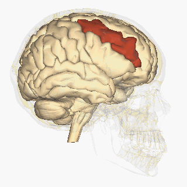

중전두회 (Middle Frontal Gyrus)

쉽게 풀면
이마 쪽 뇌인 전두엽의 겉면에는 가로로 난 이랑이 위, 가운데, 아래로 있다. 중전두회는 그 가운데 이랑이다. 하나의 뚜렷한 이랑이라기보다 전두엽의 한 영역을 가리키는 이름에 가깝다.
왜 중요한가
이 이름이 어디까지를 가리키는지 알아 두면 뇌영상 논문의 결과를 읽기 쉽다.
어디에 있고 어떻게 생겼나
- 위치: 전두엽의 가쪽(외측) 부분에 있으며 전두엽의 약 3분의 1을 이룬다.
- 경계: 아래쪽은 하전두고랑, 위쪽은 상전두고랑, 뒤쪽은 중심앞고랑이다.
- 이랑의 구분: 상전두회, 하전두회와 함께 가로로 놓인 세 이랑 중 하나이다. 전두엽의 이 이랑들은 진짜 이랑이라기보다 영역에 가깝다는 설명이 있다.
맡은 기능
전두엽 전체의 고차 기능은 전전두피질과 작업기억 항목에서 찾아볼 수 있다.
좌반구 신경교종 환자 72명을 대상으로 한 연구에서는 깨어 있는 상태의 수술 중 전기자극으로 그림 이름대기를 검사했다. 브로카 영역을 침범한 종양 환자(10명)에서는 그렇지 않은 환자(62명)보다 중간이마이랑 자극에 따른 이름대기 방해 반응이 유의하게 더 자주 나타났다. 저자들은 종양이 자라면서 병변 주위 중간이마이랑에 언어 영역이 생길 수 있다고 결론지었다.
연구에서 다루는 방식
이름이 넓은 영역을 가리키므로 활성의 정확한 좌표나 사용한 아틀라스를 함께 적어야 다른 연구와 비교할 수 있다. 결과를 해석할 때는 이 이름 하나로 특정 기능을 연결하지 않는 편이 안전하다.
같은 연구의 뇌 네트워크 분석에서는 중간이마이랑의 앞쪽과 뒤쪽 한 곳씩이 이웃한 전두엽 부위보다 중심성이 높았고, 그중 뒤쪽 영역이 두드러졌다.
논문에서는 이렇게 쓰입니다
실제 논문에서
국내 학술지 논문에서 이 용어가 쓰인 문장을 그대로 옮겼다. 제목·학술지·연도와 원문 링크를 함께 적었다.
“비단어 읽기 과제시 일반 아동의 경우에는 좌반구의 하측두회와 중전두회와 우반구의 상전두회와 중심전회가 많이 활성화된 반면에, 읽기 장애 아동의 경우에는 단어 읽기에서와 비슷하게 좌우반구의 배측 시각 경로인 lingual 영역이 많이 활성화되었다.”
일반 아동과 한글 읽기 장애 아동의 단어 읽기 과제시 뇌활성화 영역 비교: fMRI를 활용한 사례 연구, 특수교육저널:이론과 실천, 2008 · KCI 한국학술지인용색인 · 원문 보기 ↗
조금 더 깊게 보면
전두엽은 가쪽, 극, 안와, 안쪽 부분으로 나뉘며, 중전두회는 가쪽 부분에서 상전두회의 가쪽 부분, 하전두회와 함께 놓인다. 전두엽에는 중심고랑 바로 앞에서 나란히 달리며 일차 운동피질을 가진 중심앞이랑도 있다. 하전두회는 안와부, 삼각부, 덮개부로 나뉘며 기능상 복외측 전전두피질로 불린다.
주의할 점
전두엽 기능을 설명하는 이론에는 단일 과정 이론, 다중 과정 이론, 작업기억이나 억제 같은 하나의 구성개념으로 설명하려는 구성개념 주도 이론, 단일 증상 이론이 있어 이론마다 해석이 갈린다. 따라서 중전두회의 활성을 어느 한 이론의 기능 이름으로 바로 읽지 않는다.
참고 문헌
- Wikipedia contributors. (n.d.). Middle frontal gyrus. Wikipedia.
- Wikipedia contributors. (n.d.). Frontal lobe. Wikipedia.
- Nakajima, R., Ogawa, A., Kinoshita, M., Osada, T., Okita, H., Konishi, S., Nakada, M. (2025). Broader functionality of language areas at the left middle frontal gyrus in patients with Broca's area tumors. NeuroImage. Clinical, 48, 103860.